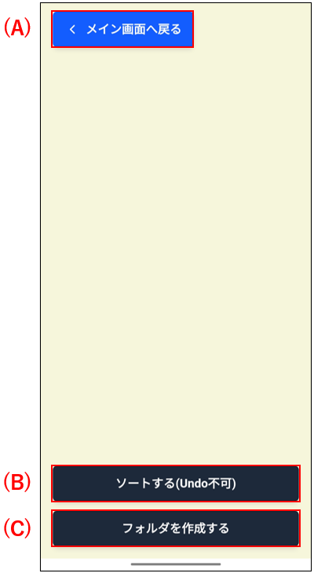
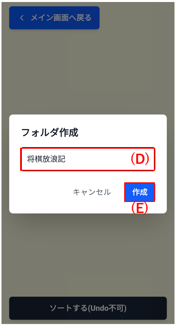
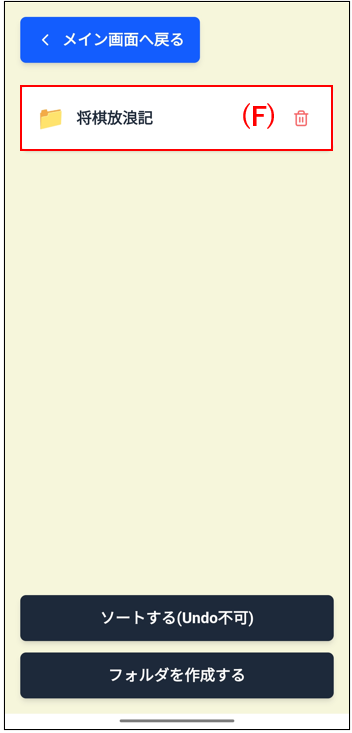
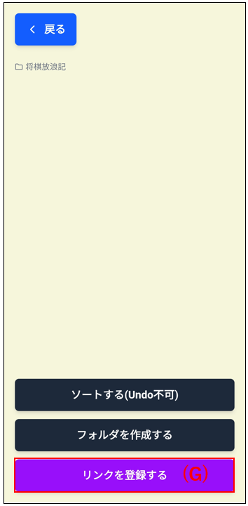
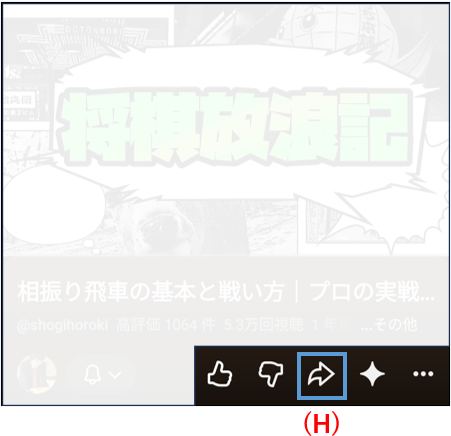
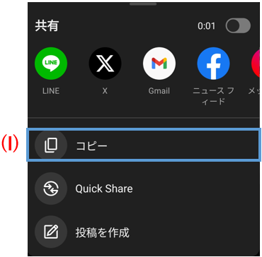
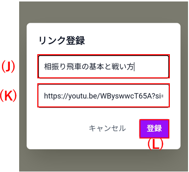
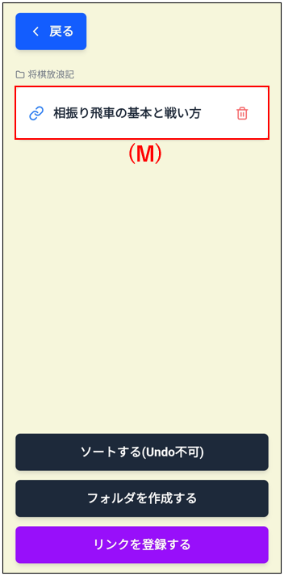

・複数のweb情報を見返しやすくまとめておきたい
ネットで収集した情報を、フォルダ形式でまとめておくことができます。
トップ画面から「リンク登録」ボタンを押すと、下記に示す画面に遷移します。
(A)ボタンを押すと、トップ画面に戻ります。
(B)ボタンを押すと、登録されたフォルダやリンク一覧を順序良く整理します。
(C)ボタンを押すと、リンクを登録することができます。

・リンク登録デモ
今回は、2026年現在で日本将棋連盟棋士六段の藤森哲也先生がお送りしている「将棋放浪記」チャンネルの動画リンクを登録する作業を行う流れをご説明します。
(C)ボタンを押すと、(D)のフォルダ名を入力するフォームが現れますので、入力して(E)ボタンを押します。

一覧に作成したフォルダ(F)が表示されるようになります。続いてフォルダをタップします。

(F)ボタンを押すと、フォルダの中に入ることができます。すると、リンクを登録する画面(G)が現れます。続けてこのボタンを押すと、登録するリンク情報を入力するフォームが表示されます。

ここで、youtubeのリンクをコピーしに行きます。
(H)ボタンを押すと、動画リンクを共有するフォームが現れます。

(I)ボタンを押して、動画リンクをコピーして元のツール画面に戻ります。

(J)に表示名を、
(K)にコピーした動画リンクを貼り付けて
(L)ボタンを押します。

これで、「将棋放浪記」フォルダの中に、後で見返したい動画リストが表示されるようになりました。
(M)ボタンを押すことで、さきほど検索した動画が見れます。
